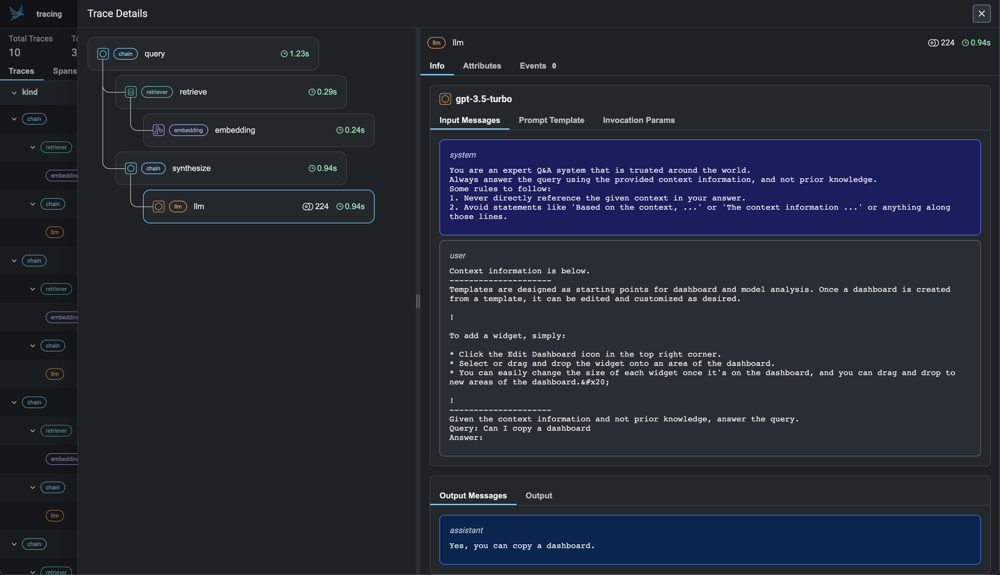
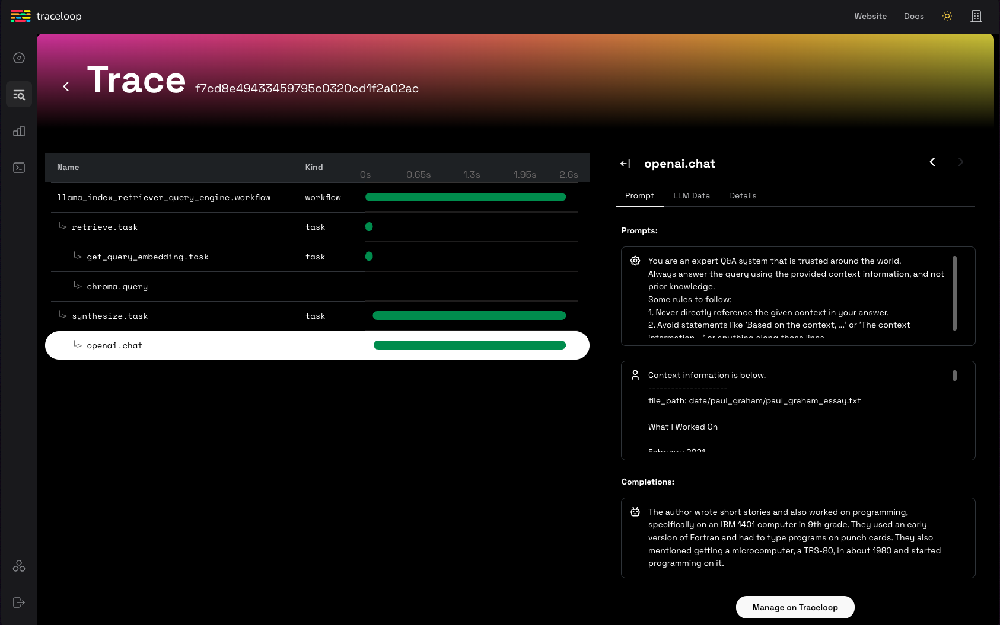
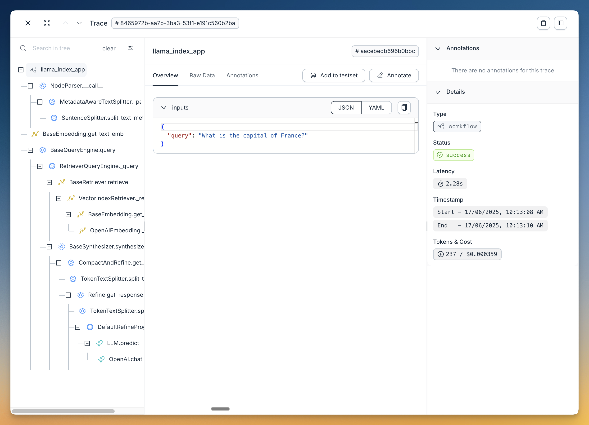

可观测性#
LlamaIndex 提供一键式可观测性功能 🔭，帮助您在生产环境中构建规范的 LLM 应用。
开发基于数据的规范 LLM 应用（RAG 系统、智能体）时，关键需求是能够观察、调试和评估系统——无论是整体还是每个组件。
该功能让您能无缝将 LlamaIndex 库与我们合作伙伴提供的强大观测/评估工具集成。只需配置一次变量，即可实现以下功能：
- 查看 LLM/提示词输入输出
- 确保任何组件（LLM、嵌入模型）的输出符合预期
- 查看索引和查询的调用链路
各服务提供商既有共性也有差异。请查阅下方完整指南了解每个工具的详细说明！
注意：
可观测性功能现通过 instrumentation 模块 实现（v0.10.20 及以上版本可用）。
本页提及的许多工具和集成仍在使用旧版 CallbackManager 或未采用 set_global_handler 方式。我们已对这些集成进行了标注！
使用模式#
通常只需执行以下操作即可启用：
from llama_index.core import set_global_handler
# 通用用法
set_global_handler("<handler_name>", **kwargs)
注意：所有传递给 set_global_handler 的 kwargs 参数都会透传给底层的回调处理器。
完成！执行过程将自动接入下游服务，您可查看应用执行链路等特性。
集成方案#
OpenTelemetry#
OpenTelemetry 是广泛使用的开源追踪与可观测性服务，支持多种后端集成（如 Jaeger、Zipkin 或 Prometheus）。
我们的 OpenTelemetry 集成会追踪 LlamaIndex 代码生成的所有事件，包括 LLM、智能体、RAG 管道组件等：所有通过 LlamaIndex 原生插桩获取的数据都能以 OpenTelemetry 格式导出！
安装方式：
pip install llama-index-observability-otel
使用示例（RAG 管道默认配置）：
from llama_index.observability.otel import LlamaIndexOpenTelemetry
from llama_index.core import SimpleDirectoryReader, VectorStoreIndex
from llama_index.llms.openai import OpenAI
from llama_index.embeddings.openai import OpenAIEmbedding
from llama_index.core import Settings
# 初始化插桩对象
instrumentor = LlamaIndexOpenTelemetry()
if __name__ == "__main__":
embed_model = OpenAIEmbedding(model_name="text-embedding-3-small")
llm = OpenAI(model="gpt-4.1-mini")
# 开始监听！
instrumentor.start_registering()
# 注册事件
documents = SimpleDirectoryReader(
input_dir="./data/paul_graham/"
).load_data()
index = VectorStoreIndex.from_documents(documents, embed_model=embed_model)
query_engine = index.as_query_engine(llm=llm)
query_result_one = query_engine.query("Who is Paul?")
query_result_two = query_engine.query("What did Paul do?")
也可使用更复杂的自定义配置：
import json
from pydantic import BaseModel, Field
from typing import List
from llama_index.observability.otel import LlamaIndexOpenTelemetry
from opentelemetry.exporter.otlp.proto.http.trace_exporter import (
OTLPSpanExporter,
)
# 定义自定义跨度导出器
span_exporter = OTLPSpanExporter("http://0.0.0.0:4318/v1/traces")
# 初始化插桩对象
instrumentor = LlamaIndexOpenTelemetry(
service_name_or_resource="my.test.service.1",
span_exporter=span_exporter,
debug=True,
)
if __name__ == "__main__":
instrumentor.start_registering()
# ... 你的代码
我们还提供了演示仓库，展示如何追踪智能体工作流并将注册的链路导入 PostgreSQL 数据库。
LlamaTrace（托管版 Arize Phoenix）#
我们与 Arize 合作推出 LlamaTrace，这是一个原生支持 LlamaIndex 开源用户的托管式追踪、可观测性和评估平台，并与 LlamaCloud 集成。
该平台基于开源的 Arize Phoenix 项目构建。Phoenix 提供面向笔记本的模型和 LLM 应用监控体验，主要功能包括：
- LLM 链路追踪 - 追踪 LLM 应用执行过程，了解内部运作机制，排查检索和工具执行相关问题
- LLM 评估 - 利用大语言模型评估生成模型或应用的相关性、毒性等指标
使用模式#
安装集成包：pip install -U llama-index-callbacks-arize-phoenix
在 LlamaTrace 创建账户：https://llamatrace.com/login。生成 API 密钥并填入下方 PHOENIX_API_KEY 变量。
运行以下代码：
# Phoenix 可实时显示从 LlamaIndex 应用自动收集的链路
# 照常运行所有 LlamaIndex 应用，链路将自动收集并显示在 Phoenix 中
# 配置 Arize Phoenix 日志/观测功能
import llama_index.core
import os
PHOENIX_API_KEY = "<PHOENIX_API_KEY>"
os.environ["OTEL_EXPORTER_OTLP_HEADERS"] = f"api_key={PHOENIX_API_KEY}"
llama_index.core.set_global_handler(
"arize_phoenix", endpoint="https://llamatrace.com/v1/traces"
)
...
指南#

MLflow#
MLflow 是开源的 MLOps/LLMOps 平台，专注于机器学习项目全生命周期管理，确保每个阶段可管理、可追踪、可复现。 MLflow Tracing 是基于 OpenTelemetry 的追踪能力，支持对 LlamaIndex 应用的一键式插桩。
使用模式#
MLflow 是开源工具，无需创建账户或设置 API 密钥即可使用。安装 MLflow 包后可直接运行代码：
import mlflow
mlflow.llama_index.autolog() # 启用 MLflow 追踪

指南#
MLflow LlamaIndex 集成还提供实验跟踪、评估、依赖管理等功能。详见 MLflow 文档。
支持表#
MLflow Tracing 支持 LlamaIndex 全部功能。部分新特性如 AgentWorkflow 需要 MLflow >= 2.18.0。
| 流式传输 | 异步 | 引擎 | 智能体 | 工作流 | 智能体工作流 |
|---|---|---|---|---|---|
| ✅ | ✅ | ✅ | ✅ | ✅ (>= 2.18) | ✅ (>= 2.18) |
OpenLLMetry#
OpenLLMetry 是基于 OpenTelemetry 的开源项目，用于追踪和监控 LLM 应用。它可连接所有主流观测平台，几分钟即可完成安装。
使用模式#
from traceloop.sdk import Traceloop
Traceloop.init()
指南#

Arize Phoenix（本地版）#
您也可以选择通过开源项目使用 本地版 Phoenix。
这种情况下无需在 LlamaTrace 创建账户或设置 Phoenix API 密钥。Phoenix 服务将在本地启动。
使用模式#
安装集成包：pip install -U llama-index-callbacks-arize-phoenix
运行以下代码：
# Phoenix 可实时显示从 LlamaIndex 应用自动收集的链路
# 照常运行所有 LlamaIndex 应用，链路将自动收集并显示在 Phoenix 中
import phoenix as px
# 在输出中查找 URL 在浏览器中打开应用
px.launch_app()
# 应用初始为空，但执行后续步骤时，
# LlamaIndex 应用的运行链路将自动显示
import llama_index.core
llama_index.core.set_global_handler("arize_phoenix")
...
示例指南#
Langfuse 🪢#
Langfuse 是一个开源的LLM工程平台，帮助团队协作调试、分析和迭代他们的LLM应用。通过Langfuse集成，您可以跟踪和监控LlamaIndex应用的性能、追踪和指标。上下文增强和LLM查询过程的详细追踪记录会被捕获，并可直接在Langfuse UI中查看。
使用模式#
确保已安装 llama-index 和 langfuse。
pip install llama-index langfuse openinference-instrumentation-llama-index
接下来，设置您的Langfuse API密钥。您可以通过注册免费的Langfuse Cloud账户或自托管Langfuse获取这些密钥。这些环境变量对于Langfuse客户端认证和向您的Langfuse项目发送数据至关重要。
import os
# 从项目设置页面获取密钥：https://cloud.langfuse.com
os.environ["LANGFUSE_PUBLIC_KEY"] = "pk-lf-..."
os.environ["LANGFUSE_SECRET_KEY"] = "sk-lf-..."
os.environ["LANGFUSE_HOST"] = "https://cloud.langfuse.com" # 🇪🇺 欧盟区域
# os.environ["LANGFUSE_HOST"] = "https://us.cloud.langfuse.com" # 🇺🇸 美国区域
设置好环境变量后，我们现在可以初始化Langfuse客户端。get_client() 使用环境变量中提供的凭据初始化Langfuse客户端。
from langfuse import get_client
langfuse = get_client()
# 验证连接
if langfuse.auth_check():
print("Langfuse客户端已认证并准备就绪！")
else:
print("认证失败。请检查您的凭据和主机。")
现在，我们初始化OpenInference LlamaIndex插装。这个第三方插装自动捕获LlamaIndex操作，并将OpenTelemetry (OTel)跨度导出到Langfuse。
from openinference.instrumentation.llama_index import LlamaIndexInstrumentor
# 初始化LlamaIndex插装
LlamaIndexInstrumentor().instrument()
您现在可以在Langfuse中查看LlamaIndex应用的日志：
{kind=link}
示例指南#
Literal AI#
Literal AI 是首选的LLM评估和可观测性解决方案，使工程和产品团队能够可靠、快速且大规模地交付LLM应用。这通过一个涉及提示工程、LLM可观测性、LLM评估和LLM监控的协作开发周期实现。对话线程和代理运行可以自动记录在Literal AI上。
最简单的方式是注册我们的云实例并开始尝试。然后导航到设置，获取您的API密钥，并开始记录！
使用模式#
- 使用
pip install literalai安装Literal AI Python SDK - 在您的Literal AI项目中，转到设置并获取您的API密钥
- 如果您使用的是自托管的Literal AI实例，还需记下其基础URL
然后在您的应用代码中添加以下行：
from llama_index.core import set_global_handler
# 您应通过以下环境变量提供您的Literal AI API密钥和基础URL：
# LITERAL_API_KEY, LITERAL_API_URL
set_global_handler("literalai")
示例指南#
Comet Opik#
Opik 是由Comet构建的开源端到端LLM评估平台。
要开始使用，只需在Comet上注册账户并获取您的API密钥。
使用模式#
- 使用
pip install opik安装Opik Python SDK - 在Opik中，从用户菜单获取您的API密钥
- 如果您使用的是自托管的Opik实例，还需记下其基础URL
您可以使用环境变量 OPIK_API_KEY、OPIK_WORKSPACE 和 OPIK_URL_OVERRIDE（如果您使用的是自托管实例）配置Opik。可以通过以下命令设置：
export OPIK_API_KEY="<OPIK_API_KEY>"
export OPIK_WORKSPACE="<OPIK_WORKSPACE - 通常与您的API密钥相同>"
# 可选
#export OPIK_URL_OVERRIDE="<OPIK_URL_OVERRIDE>"
您现在可以通过设置全局处理器来使用Opik与LlamaIndex的集成：
from llama_index.core import Document, VectorStoreIndex, set_global_handler
# 您应通过以下环境变量提供您的OPIK API密钥和工作区：
# OPIK_API_KEY, OPIK_WORKSPACE
set_global_handler(
"opik",
)
# 此示例默认使用OpenAI，因此别忘了设置OPENAI_API_KEY
index = VectorStoreIndex.from_documents([Document.example()])
query_engine = index.as_query_engine()
questions = [
"告诉我关于LLMs的信息",
"如何微调神经网络？",
"什么是RAG？",
]
for question in questions:
print(f"> \033[92m{question}\033[0m")
response = query_engine.query(question)
print(response)
您将在Opik中看到以下追踪记录：

示例指南#
Argilla#
Argilla 是一个为AI工程师和领域专家提供的协作工具，用于为他们的项目构建高质量的数据集。
要开始使用，您需要部署Argilla服务器。如果尚未部署，可以按照此指南轻松完成。
使用模式#
- 使用
pip install argilla-llama-index安装Argilla LlamaIndex集成包 - 初始化ArgillaHandler。
<api_key>在您的Argilla空间的My Settings页面中，但确保您使用的是创建空间时使用的owner账户登录。<api_url>是浏览器中显示的URL。 - 将ArgillaHandler添加到分发器。
from llama_index.core.instrumentation import get_dispatcher
from argilla_llama_index import ArgillaHandler
argilla_handler = ArgillaHandler(
dataset_name="query_llama_index",
api_url="http://localhost:6900",
api_key="argilla.apikey",
number_of_retrievals=2,
)
root_dispatcher = get_dispatcher()
root_dispatcher.add_span_handler(argilla_handler)
root_dispatcher.add_event_handler(argilla_handler)
示例指南#

Agenta#
Agenta 是一个开源的 LLMOps 平台，帮助开发者和产品团队构建基于大语言模型的稳健 AI 应用。它提供全套工具用于可观测性、提示管理与工程以及大语言模型评估。
使用模式#
安装集成所需的依赖项：
pip install agenta llama-index openinference-instrumentation-llama-index
设置 API 凭证并初始化 Agenta：
import os
import agenta as ag
from openinference.instrumentation.llama_index import LlamaIndexInstrumentor
# 设置 Agenta 凭证
os.environ["AGENTA_API_KEY"] = "your_agenta_api_key"
os.environ[
"AGENTA_HOST"
] = "https://cloud.agenta.ai" # 如适用，使用自托管 URL
# 初始化 Agenta SDK
ag.init()
# 启用 LlamaIndex 插装
LlamaIndexInstrumentor().instrument()
构建插装后的应用：
@ag.instrument()
def document_search_app(user_query: str):
"""
使用 LlamaIndex 的文档搜索应用。
加载文档，构建可搜索索引，并回答用户查询。
"""
# 从本地目录加载文档
docs = SimpleDirectoryReader("data").load_data()
# 构建向量搜索索引
search_index = VectorStoreIndex.from_documents(docs)
# 初始化查询处理器
query_processor = search_index.as_query_engine()
# 处理用户查询
answer = query_processor.query(user_query)
return answer
完成设置后，Agenta 会自动捕获所有执行步骤。您可以在 Agenta 中查看追踪记录以调试应用，将其关联到特定配置和提示，评估性能，查询数据并监控关键指标。

示例指南#
其他合作伙伴「一键式」集成（旧版模块）#
这些合作伙伴集成使用我们旧版的 CallbackManager 或第三方调用。
Langfuse#
该集成已弃用。建议使用新版基于插装的 Langfuse 集成，详见此处。
使用模式#
from llama_index.core import set_global_handler
# 确保已安装 'llama-index-callbacks-langfuse' 集成包。
# 注意：设置环境变量 'LANGFUSE_SECRET_KEY'、'LANGFUSE_PUBLIC_KEY' 和 'LANGFUSE_HOST'
# 如您在 langfuse.com 项目设置中所示。
set_global_handler("langfuse")
指南#

DeepEval#
DeepEval（由 Confident AI 提供） 是一个用于大语言模型应用的开源评估框架。当您使用 DeepEval 提供的 14+ 默认指标（如摘要、幻觉、答案相关性、忠实度、RAGAS 等）对 LLM 应用进行"单元测试"时，可以通过此与 LlamaIndex 的追踪集成调试失败的测试用例，或通过 DeepEval 的托管评估平台 Confident AI 在生产环境中调试不满意的评估结果，该平台在生产环境中运行无参考评估。
使用模式#
from llama_index.core import set_global_handler
set_global_handler("deepeval")
# 注意：在 CLI 中运行 'deepeval login' 以在 Confident AI（DeepEval 的托管评估平台）上记录追踪。
# 照常运行所有 LlamaIndex 应用，当评估运行时，
# 追踪数据将被收集并显示在 Confident AI 上。
...

Weights and Biases Prompts#
Prompts 允许用户在索引构建和查询过程中记录/追踪/检查 LlamaIndex 的执行流程。它还允许用户对索引进行版本控制。
使用模式#
from llama_index.core import set_global_handler
set_global_handler("wandb", run_args={"project": "llamaindex"})
# 注意：无需执行以下操作
from llama_index.callbacks.wandb import WandbCallbackHandler
from llama_index.core.callbacks import CallbackManager
from llama_index.core import Settings
# wandb_callback = WandbCallbackHandler(run_args={"project": "llamaindex"})
# Settings.callback_manager = CallbackManager([wandb_callback])
# 访问处理器上的其他方法以持久化索引 + 加载索引
import llama_index.core
# 持久化索引
llama_index.core.global_handler.persist_index(graph, index_name="my_index")
# 加载存储上下文
storage_context = llama_index.core.global_handler.load_storage_context(
artifact_url="ayut/llamaindex/my_index:v0"
)

指南#
OpenInference#
OpenInference 是一个用于捕获和存储 AI 模型推理的开放标准。它支持使用 Phoenix 等 LLM 可观测性解决方案对 LLM 应用进行实验、可视化和评估。
使用模式#
import llama_index.core
llama_index.core.set_global_handler("openinference")
# 注意：无需执行以下操作
from llama_index.callbacks.openinference import OpenInferenceCallbackHandler
from llama_index.core.callbacks import CallbackManager
from llama_index.core import Settings
# callback_handler = OpenInferenceCallbackHandler()
# Settings.callback_manager = CallbackManager([callback_handler])
# 在此运行您的 LlamaIndex 应用...
for query in queries:
query_engine.query(query)
# 以 OpenInference 格式将 LLM 应用数据作为数据框查看。
from llama_index.core.callbacks.open_inference_callback import as_dataframe
query_data_buffer = llama_index.core.global_handler.flush_query_data_buffer()
query_dataframe = as_dataframe(query_data_buffer)
注意：要解锁 Phoenix 的功能，您需要定义额外步骤来输入查询/上下文数据框。见下文！
指南#
TruEra TruLens#
TruLens 允许用户通过反馈函数和追踪等功能对 LlamaIndex 应用进行插装/评估。
使用模式 + 指南#
# 使用 trulens
from trulens_eval import TruLlama
tru_query_engine = TruLlama(query_engine)
# 查询
tru_query_engine.query("作者成长过程中做了什么？")

指南#
HoneyHive#
HoneyHive 允许用户追踪任何 LLM 工作流的执行流程。用户可以调试和分析追踪记录，或自定义特定追踪事件的反馈，从生产环境中创建评估或微调数据集。
使用模式#
from llama_index.core import set_global_handler
set_global_handler(
"honeyhive",
project="My HoneyHive Project",
name="My LLM Workflow Name",
api_key="MY HONEYHIVE API KEY",
)
# 注意：无需执行以下操作
from llama_index.core.callbacks import CallbackManager
# from honeyhive.utils.llamaindex_tracer import HoneyHiveLlamaIndexTracer
from llama_index.core import Settings
# hh_tracer = HoneyHiveLlamaIndexTracer(
# project="My HoneyHive Project",
# name="My LLM Workflow Name",
# api_key="MY HONEYHIVE API KEY",
# )
# Settings.callback_manager = CallbackManager([hh_tracer])

 使用 Perfetto 调试和分析您的 HoneyHive 追踪记录
使用 Perfetto 调试和分析您的 HoneyHive 追踪记录
指南#
PromptLayer#
PromptLayer 允许您跨 LLM 调用跟踪分析，对各种用例的提示进行标记、分析和评估。将其与 LlamaIndex 结合使用，以跟踪您的 RAG 提示等性能。
使用模式#
import os
os.environ["PROMPTLAYER_API_KEY"] = "pl_7db888a22d8171fb58aab3738aa525a7"
from llama_index.core import set_global_handler
# pl_tags 是可选的，用于帮助组织提示和应用
set_global_handler("promptlayer", pl_tags=["paul graham", "essay"])
指南#
Langtrace#
Langtrace 是一个强大的开源工具，支持 OpenTelemetry，旨在无缝追踪、评估和管理 LLM 应用。Langtrace 直接与 LlamaIndex 集成，提供关于准确性、评估和延迟等性能指标的详细实时洞察。
安装#
pip install langtrace-python-sdk
使用模式#
from langtrace_python_sdk import (
langtrace,
) # 必须在任何 llm 模块导入之前
langtrace.init(api_key="<LANGTRACE_API_KEY>")
指南#
OpenLIT#
OpenLIT 是一款基于 OpenTelemetry 的原生 GenAI 和 LLM 应用可观测性工具。其设计目标是通过单行代码即可为 GenAI 项目集成可观测性功能。OpenLIT 为包括 LlamaIndex 在内的多种 LLM、向量数据库和框架提供 OpenTelemetry 自动插桩支持，可深入分析 LLM 应用性能、追踪请求链路，并提供成本、令牌用量等关键指标概览。
安装#
pip install openlit
使用模式#
import openlit
openlit.init()
指南#
AgentOps#
AgentOps 帮助开发者构建、评估和监控 AI 智能体。该工具支持从原型到生产的全流程开发，提供智能体监控、LLM 成本追踪、性能基准测试等功能。
安装#
pip install llama-index-instrumentation-agentops
使用模式#
from llama_index.core import set_global_handler
# 注意：可按照 AgentOps 文档设置环境变量（如 'AGENTOPS_API_KEY'）
# 或通过 set_global_handler 的 **eval_params 参数传递 AOClient 所需的关键字参数
set_global_handler("agentops")
简易模式（LLM 输入/输出）#
该简易观测工具会将所有 LLM 输入/输出对打印至终端，最适合需要快速启用 LLM 应用调试日志的场景。
使用模式#
import llama_index.core
llama_index.core.set_global_handler("simple")